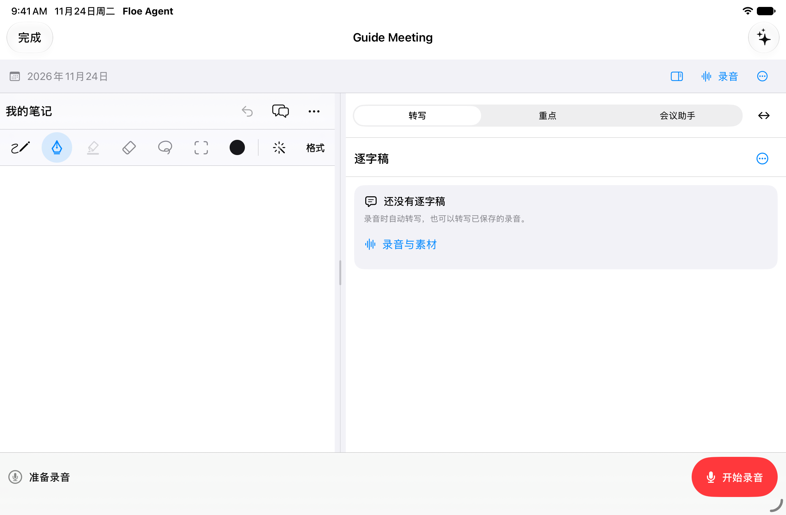

공간 및 전문 작업대
개요
Floe의 개인 라이브러리와 전용 작업대를 위한 작업 기반 튜토리얼: 공간 파일 및 작업물, 회의, 음악, 다이어그램, 제조 및 3D 프린팅, 네트워크 툴박스, 그리고 화학 프로젝트. 모델, 작업, 메모 및 Office 기본에 대해서는 다음을 읽어 보십시오. 사용자 매뉴얼 첫 번째.
어떤 빌드가 필요합니까?
Floe의 채널은 서로 다른 기능 세트를 제공합니다. 아래 라벨은 워크플로의 릴리스 기준을 식별하며, 현재 채널 버전 및 검증 날짜는 유지됩니다. 현재_상태:
| 라벨 | 그것을 어디서 구하시는지 | 여기서 다루는 내용 |
|---|---|---|
| 1.7.74 | App Store, iOS/iPadOS 26+ | 안정적인 공개 릴리스. 1.7.74라고 표시된 섹션만 적용됩니다; Space와 전문 작업대는 아직 이 빌드에 포함되지 않았습니다. |
| 1.8.5 기준선 | 원본 릴리스; 새로운 설치 프로그램을 선택할 때 채널 상태를 따르세요 | 공간, 회의, 음악, 도면, 제조 및 인쇄, 공구함, 그리고 화학에 대한 원본 튜토리얼 기준선. |
| 1.8.6 추가 | 서명되지 않은 IPA가 발행되었습니다; TestFlight 가용성은 별도입니다 | LaTeX, 도식/PCB, 생물학 및 CAD 엔지니어링 분석 항목이 포함되어 있습니다; 고급 PCB와 시뮬레이션 작업은 계속 진행 중입니다. |
| 기타 전문 편집자 | 선택된 릴리스 및 통합 레코드를 확인하십시오. | GIS, 글꼴 디자인, 표기법 및 Image Playground는 별도의 범위와 자격 요건을 가지고 있으며, 개발 변경 사항은 설치 프로그램에 자동으로 포함되지 않습니다. |
설정 → 진단 및 정보에서 설치된 버전을 찾으십시오. 채널별 가용성은 추적됩니다 릴리스 및 설치 상태; 그 릴리스 센터 게시된 모든 빌드를 나열합니다.
1. 공간: 귀하의 파일 및 작업 — 1.8.5

New screenshots in this guide show Floe 1.8.72 (393) in the iPad Simulator.
Space는 Floe에서 귀하가 개인적으로 소유한 모든 것, 즉 노트 라이브러리와 편집 가능한 작품 및 파일 라이브러리를 위한 사이드바의 홈입니다.
Choose a workbench in 개요 based on what you want to make. Name the project and choose where to keep it. Use Continue working 또는 Files to reopen the project later.
| What you are working on | Which feature to use | Typical result |
|---|---|---|
| Class notes, reading annotations or reference material | 노트. Keep handwritten and annotated pages in documents. | Notes you can keep adding to |
| Meeting audio, transcripts and decisions | Meeting Notes. Keep the audio, transcript and highlights together. | Recording, transcript and minutes |
| Evolving drafts, reference images and candidate designs | Canvas in Creative Mode. Arrange and compare objects on a board. | A board you can keep arranging |
| Processes, sequences, relationships or system structure | Diagram. Use shapes and connections to show relationships. | An editable diagram |
| Photo corrections, cover art or a transparent icon | Drawing / image. Work with text, strokes, selections and masks on layers. | An editable image project and a PNG or other image |
| Cutting clips, adding music and lining up subtitles | 비디오. Align picture, sound and captions on a timeline. | A video project and MP4 |
| Arranging melodies or keeping musical parts separate | Music project. Arrange notes, audio and instruments on tracks. | An editable song, audio or MIDI |
| Plans, parts, floors or circuits | 2D Design, 3D Design, Building Project or Electronics Design. Choose according to whether you are working with dimensions, solids, storeys or circuits. | A drawing, solid, building project, schematic or PCB |
| Viewing geographic data or inspecting regions by field | Map Editor. Work with layers, features, attributes and coordinate systems. | A map project or layer data |
| Typesetting a paper, equations and references | LaTeX document. Edit the source and compile to inspect the result. | LaTeX project and PDF |
| A quick calculation, conversion or measurement | Toolbox. Open the utility for the immediate job. | A calculation, dimension or angle |
첫 번째 안내:
- 열기 공간 사이드바에서 네 개의 섹션이 있습니다: 개요, 메모, 파일 및 도구 상자.
- 개요에는 빠른 접근 항목, 고정된 작업, 폴더, 그리고 계속 작업하기(최근에 연 메모 및 작업)가 표시됩니다.
- 파일은 귀하의 작업을 나열합니다. 목록과 썸네일 사이를 전환하고, 유형별로 필터링하십시오: 문서, 도면/이미지, 비디오 또는 CAD.
- To start a particular kind of work, open its shortcut or workbench under 개요. To choose a destination first, open the folder under Files, then choose a type from +. Enter a name, check Location, and tap Create. Start blank notes and meetings from Notes → +.
- 가져오기를 사용하여 기존 파일을 가져오거나 다른 위치 찾아보기... 모든 작업 공간 파일, 보관된 채팅 파일 및 보관(복제된) 문서에 접근하기 위해. 삭제된 작업은 복구할 수 있습니다 최근 삭제됨.
소유권 및 저축:
- 작품은 귀하의 개인 기기 내 라이브러리에 저장됩니다. 이들은 어떤 채팅 작업에도 속하지 않습니다: 채팅을 삭제해도 작업이 삭제되지 않으며, 작업을 삭제해도 작업 파일이나 프로젝트 파일에 영향을 주지 않습니다. 삭제하기 전에 중요한 것을 내보내십시오.
- 편집자는 작업 자체에 저장합니다. 작업을 계속 작업에서 닫았다가 다시 열어 최신 상태를 확인하십시오; 복구 복사본은 저장된 파일을 수락할 때까지 보관된 문서에 보관됩니다.
- 작업은 자체 보조 대화(업무 보조 또는 회의용 회의 보조)를 수행할 수 있습니다. 그 대화는 작업의 일부이며 아직 보내지 않은 초안을 보관합니다; 한 작업에 대한 어시스턴트 접근 권한을 부여하면 다른 파일이 열리지 않습니다.
2. 회의: 기록, 전사, 회의록 — 1.8.5
회의는 개인 노트북, 실시간 녹음, 전사 및 AI 회의록을 하나의 작업으로 결합하며, 노트에서 열립니다.
첫 번째 회의:
- 열기 Space → Notes → + → Meeting Note, type a name and create it. In landscape, My Notes is on the left. Switch among 전사문, 하이라이트 그리고 Meeting Assistant on the right.
- To capture a meeting, use Start Recording at the bottom right. To work with a file, open Recordings and Media → Import Audio or Video. Enable live transcription if needed, or transcribe a saved recording later.
- Review the transcript under 전사문 and organize minutes and to-dos under 하이라이트. Review highlights before inserting them into your notes.
- 켜다 자동 AI 분 전사록에서 회의록을 최신 상태로 유지하거나, 회의 담당자에게 이 회의에 대한 질문에 답변하고 메모와 할 일을 정리하도록 요청하십시오. 미전환 초안은 보관됩니다.
- 내보내기 Word 또는 PDF 텍스트 분 Minutes-template 메뉴에서, 후속 작업을 작업 흐름으로 다시 전송하십시오.

새로운 빌드에서 연속 녹화: 같은 회의의 녹화 타임라인 내에서 일시 정지하고 재개하십시오. 녹화를 종료한 후, 다시 재생하고 전사 구간을 탭하여 해당 시간을 찾으세요. 기존 화자의 이름을 바꾸거나 동일한 사람을 가리키는 신원을 병합하십시오; 화자 구분은 선택된 인식 서비스에 따라 달라집니다. 회의를 다시 열어 녹음, 타임스탬프 및 수정된 전사를 검토하십시오.
Play an imported recording. In Recordings and Media, select the imported file and tap Play Full Recording. The player appears at the bottom of the meeting screen. Pause or scrub to review it. In the transcript, select a timestamped segment to jump to its position. Check the transcript, highlights and action items before exporting minutes.

제한: 녹음은 기본적으로 기기에 저장됩니다; 클라우드 전사는 귀하가 명시적으로 선택한 서비스를 사용하며 해당 제공업체에 의해 청구됩니다. 전사 품질은 귀하의 인식 설정을 따릅니다(사용자 매뉴얼 §16을 참조하십시오).
3. 음악 프로젝트 — 1.8.5
Space Music Works는 편곡, 키보드, 믹서 및 DJ 워크플로를 하나의 프로젝트에 유지합니다.
첫 번째 프로젝트:
- Space → Files에서 생성하십시오 음악 일하고 이름을 붙이세요.
- 워크벤치는 편곡과 전용 표면(피아노 롤, 드럼 그리드, 키보드, DJ 데크)을 제공하며, 믹서와 트랙용 이펙트가 포함되어 있습니다.
- 오디오 또는 MIDI 자료를 가져오거나, 어시스턴트에게 편집 제안을 요청하십시오; 각 제안은 수락하기 전에 변경 사항을 표시합니다.
- 저장은 자동으로 작업에 포함됩니다. 오디오 파일을 원하실 때 렌더링하시고, 영수증을 실제 렌더링된 파일과 확인한 뒤 작업에서 공유하거나 내보내십시오.
이 테스트 업데이트의 음악: Score에서 동일한 점수를 편집하고 저장하면서 Staff와 Numbered 표기 사이를 전환하십시오. 각 파트에 맞는 합성 악기 사운드를 선택할 수 있는 Open Performance 사운드. Perform & add 렌더링 오디오, 현재 재생 헤드에 새 트랙을 삽입하고 완료되면 배열로 돌아갑니다. 일반 재생은 오디션을 위한 것입니다. 숫자 표시된 보기에서 제외된 복잡한 표시를 보려면 Staff로 다시 전환하십시오.
새로운 빌드에서 재생 헤드에서 녹음: 재생 헤드를 의도된 시작으로 이동하고, 오디오 또는 MIDI 녹음을 선택한 다음, 실행하십시오. 기존에 음소거되지 않은 트랙은 함께 재생되며, 오래된 클립은 그대로 유지됩니다. 멈추고, 같은 타임라인에서 새 클립을 시청한 뒤 저장하고 다시 열어 위치를 확인하십시오. 어레인지 녹음, 자산 미리보기, 모니터링 및 DJ 녹음은 각각 자체 제어 기능을 가지고 있습니다; 떠나기 전에 적절한 표면에서 정지를 확인하십시오.
키보드는 사용 가능한 높이를 키에 사용합니다. 와이드 스크린에서 “인스펙터 표시/인스펙터 숨기기”가 오른쪽 인스펙터를 열거나 접습니다. 더 큰 성능 영역을 위해 하단 편집기를 확장하십시오.
제한: AI 지원 편집은 귀하가 설정한 모델을 사용합니다; 재생 및 렌더링은 기기에서 실행되며 프로젝트의 실제 기능을 따릅니다.
4. 다이어그램 및 혼합 캔버스 — 1.8.5
Diagram works well when the sequence or relationship matters. For an approval process, give each action a shape and connect the shapes in order. Reopen the work from Space → Files to check that its shapes and links are complete. Review the assistant's proposed changes before applying them.
Creative Mode Canvas keeps notes, images, documents and options for a topic together. Select an object to edit its content, or move it to rearrange the board. When comparing several image or drawing versions, keep the deliverables in their workbenches and use the canvas to record references and comparisons. See the free-form editing walkthrough.
5. 제조 및 3D 프린팅 — 1.8.5
CAD 문서에서 열리는 기계 가공 및 인쇄 제조업에 종사하는 입장.
가공 안내:
- 2D/3D CAD 디자인을 열고 제조를 입력하십시오. 먼저 기계를 선택하십시오.
- 재고, 좌표 및 작업을 설정하십시오; 어시스턴트는 현재 객체를 읽어들일 수 있으며 작업 권한 내에서 작업을 제안할 수 있습니다.
- 미리보기를 실행하여 툴패스를 따라 제거되는 자료를 확인하십시오; 구현된 충돌 검사는 실행 중에 보고됩니다.
- 결과를 저장하고, STL 또는 툴패스를 내보낸 뒤, 저장된 결과를 다시 열어 확인하십시오. Manufacturing-cell(멀티 스핀들/멀티 터렛) 프로그램은 독립적으로 저장되며 나중에 다시 읽을 수 있습니다.
3D 프린팅 안내:
- CAD 디자인 또는 파일에서 인쇄 프로젝트를 준비하십시오; Floe가 현재 기하학을 복사합니다.
- 플레이트에 모델을 배치하고, 부품을 추가하거나 복제하며, 레이어 높이 및 충전과 같은 플레이트별 설정을 조정하십시오.
- 기계 구성을 선택하십시오: 베드 크기, 좌표 원점, 노즐 오프셋, 사용자 지정 시작/끝/툴 전환 G-코드, 그리고 레진 프린터용 레진 플랫폼 방향.
- 슬라이스; 완료된 슬라이스는 미리보기를 자동으로 열며, 저장된 결과는 해당 매개변수에 바인딩된 상태를 유지합니다. 프린터가 예상하는 G-코드를 내보내고 슬라이서 또는 호스트에서 확인하십시오.
제한: 가공 미리보기 보고서는 검사만 구현되었습니다 — 이는 완전한 기계 안전 인증이 아닙니다. 이 빌드에는 기본 USB 프린터 드라이버가 포함되어 있지 않습니다; 프린터의 일반 전송 경로를 사용하십시오. 물리적 인쇄 및 가공은 귀하의 기계 실제 능력 및 안전 규정에 따라 계속 관리됩니다.
6. 네트워크 툴박스 — 1.8.5
열기 Space → Toolbox. Choose a shortcut at the top, use the categories below, or search by tool name in the upper right. Toolbox holds both network sessions and day-to-day measurement tools.

- 진단: Ping, traceroute, DNS, 포트 검사, LAN 검색, Wi‐Fi 정보 및 로밍 검사. Wi‐Fi 이름과 BSSID는 시스템 인증 시 읽기 전용이며, 시작할 때까지는 아무것도 스캔되지 않습니다.
- 연결 및 세션: HTTP, WebSocket 및 MQTT 클라이언트, 시리얼 어시스턴트(TCP, UDP 또는 Bluetooth; USB는 지원되는 iPad가 필요하고 아직 드라이버가 제공되지 않음), 그리고 터미널 및 VNC 원격 작업 공간.
- 분석: 패킷 캡처 가져오기(PCAP/PCAPNG)를 이용한 캡처 브라우저; AI 분석이 진행 상황을 보고하고, 중단할 수 있으며, 정직하게 타임아웃됩니다.
- 유틸리티: JSON 포맷팅, 인코딩 변환, QR 코드 및 체크섬.
새로운 빌드의 측정 및 일상 도구: 스와이프 가능한 상위 항목, 카테고리 또는 검색에서 도구를 선택하십시오; 전체 목록은 아래에 남아 있습니다.
- 레벨, 모션 센서, 나침반, 압력 및 고도: 읽기를 시작하고, 제공된 제로, 잠금 또는 기록 제어를 사용하며, 완료되면 수집을 중지합니다. 나침반은 자기 북쪽을 표시하고, 압력 기반 고도는 상대적인 변화를 나타냅니다.
- 자 및 각도기, 카메라 측정, 사진 측정: 먼저 실제 물체에 대해 화면 눈금자를 보정하십시오. AR 측정은 지원되는 하드웨어가 필요합니다. 사진에서 같은 평면의 길이, 각도 또는 면적을 측정하기 전에 알려진 기준 길이를 설정하고, 필요에 따라 주석을 내보냅니다. 윈도우 또는 디스플레이가 변경된 후에 보정을 다시 확인하십시오.
- 계산기 및 변환기, 위치 및 지도: 표현식을 평가하거나 단위를 교환하고 결과를 복사하십시오. 위치 접근 권한을 부여한 후, 위치와 정확성을 검사하고, 명시적으로 저장하거나 공유하거나 Notes에 전송하십시오.
- 소리 분석, 확대경 및 조명, 스캔 및 인식: 마이크 또는 카메라를 명시적으로 시작하십시오. 상대적인 오디오 레벨과 스펙트럼을 검사하고, 뷰를 확대하거나 고정하거나, 코드와 텍스트를 스캔하여 결과를 내보냅니다. 오디오 판독값은 보정된 환경 음압이 아닙니다.
- 스톱워치와 타이머: 랩을 기록하고, 명명된 카운트다운을 관리하며, 프롬프트가 표시될 때 시스템 알람을 허용합니다. 다단계 작업 타이머에 대해서는 사용자 매뉴얼 §17을 참조하십시오; 시스템 알람과 모델의 후속 실행은 별개의 결과입니다.
측정은 전체 네트워크가 아니라 하나의 엔드포인트와 경로를 포함합니다. 보고서는 선택한 것만 내보냅니다.
Calculate, convert and measure
- 열기 Calculator and Conversion, enter
2×3in Calculator, and tap Calculate. The result, 6, also appears in History. Use the copy icon beside the result when you need it elsewhere. - 열기 Unit Conversion, 선택하십시오 Length, then millimetres and centimetres. Entering 1 gives 0.1 cm. Swap the units with the arrows to see 1 cm become 10 mm.
- Return to Toolbox and open Ruler and Protractor. In Angle, drag the handles and read the angle between the lines. Before measuring a real length on screen, align the blue marks to a reference of known size, then finish calibration. Before calibration, length appears in screen points.


7. 화학 프로젝트 — 1.8.5
생성하십시오 화학 프로젝트 우주에서 → 새 네이티브 구조 편집기는 구조를 프로젝트에 저장하고, 계산 기록은 해당 파일에 연결된 상태를 유지하며, 구조 이미지는 Notes에서 참조할 수 있습니다. 구성된 실행 환경에서 무거운 재계산이 실행됩니다 — 긴 작업을 수행하기 전에 환경을 확인하십시오.
<a id="8-coming-in-the-next-update--next-update-not-in-public-builds"></a>
8. 추가 작업대 및 빌드 요구 사항
1.8.6 릴리스 노트 이러한 추가 항목을 게시된 설치 프로그램에 기록하십시오:
- LaTeX — 프로젝트 워크벤치, 소스 폴딩 및 PDF 전체 텍스트 검색, 전체 화면 변경 시 읽기/검색 상태를 유지합니다.
- 전자제품/PCB — 도식/PCB 편집, 캔버스 상호작용, 디자인 규칙 확인 및 동기화; PCB-도식 업데이트에는 차이 미리보기와 확인이 포함됩니다.
- 생물학 및 CAD 엔지니어링 분석 — Space에 추가 네이티브 워크벤치 항목이 있으며, 릴리스 범위에 편집, 미리보기 및 저장/열기 작업이 포함됩니다.
일부 고급 PCB 및 시뮬레이션 작업은 아직 개발 중이며, 기본 USB 시리얼 드라이버는 해당 빌드에 포함되지 않습니다. 이 릴리스 노트는 모든 전문 기능이나 이후의 소스 변경이 모두 제공되었다는 것을 입증하지 않습니다.
GIS, 글꼴 디자인, 표기법 및 이미지 플레이그라운드에 대해 확인하십시오. 전문가-편집자 통합 계획, 활성 통합 기록 그리고 선택된 릴리스 노트. 가용성은 기능별로 다르며, 소스 통합만으로는 전달을 확정할 수 없습니다.
Start a sketch in 3D Design
- 안에 Space → Overview, open 3D Design, name it, and check its location. Open Sketch on the left for lines, rectangles, circles and other tools.
- 선택하다 Sketch → Rectangle and select a reference plane when prompted. To draw with your finger, enable Touch drawing using the hand icon on the left, then drag between opposite corners on the grid. Check that the four edges close. If dragging pans the view, check the switch, the rectangle tool and the current plane.
- 탭 Exit Sketching and select the interior of the closed profile. Under Features → Extrude, set the distance to
2 mm, 선택하십시오 New Body and confirm. A5 × 3 mmrectangle should produce a solid2 mmthick. If you cannot select the interior, return to the sketch and look for gaps or overlaps. - Close and reopen the project by name in Space → Files to confirm the solid was saved. For a mesh delivery, use the share icon at the top and choose STL → Save to Files. Check its dimensions and orientation in the receiving app. Keep the 3D project for further editing. See the unified 3D workbench for more.


Choose the right workbench
| What you want to work on | Where to start in Space | What to check |
|---|---|---|
| Floor plans with rooms | Overview → Building Project. Choose a storey before editing walls, rooms or drawings. | Units, the selected storey, and which objects belong to it after reopening. |
| 2D lines and dimensions | Overview → 2D Design, or open an editable DXF or DWG from Files. | Selected layer, objects, dimensions and units. Save and reopen. |
| A typeset paper | Overview → LaTeX Document. Edit the project source and compile the PDF. | Build log and PDF pages. Keep both the project and the delivery PDF. |
| Schematics and PCB layouts | Files → + → Electronics. Edit the schematic before reviewing the component and net changes in PCB. | Review sync differences before applying and run design rule checks after routing. |
| Map data | Files → … → Import geographic data…, or choose Map Editor from the new-project menu. | Select a specific layer and check its coordinate system, visibility, attributes and exported geometry. |
| A molecule for a lesson | Overview → Chemistry Project. Open or draw a molecule in the structure editor. | Structure diagram, saved project and the status of any calculation. |
| Sequence material for teaching | Overview → Biology Project. Open a project and inspect a record or annotations. | Record name, annotation range, and which file is the original or an exported copy. |
Available formats and workbench options depend on the installed build.
2D Design: draw a rectangle and deliver a DXF
- Create a drawing in Space → Overview → 2D Design. Check that the upper-right unit is mm, enable Touch drawing on the left, and choose Rectangle. Drag between two corners on the grid. The example measures
6 × 4 mmwith a20 mmperimeter. If the size differs, check the units, snapping and all four corners. - Use the share icon at the top, choose DXF, and choose a destination in Files. Open the DXF in the receiving CAD app to check that the profile is closed and its dimensions match the project.
- 탭 완료, then reopen the drawing by name in Space → Files and check its four edges. Use this drawing when continuing in Floe.

Maps: import, edit attributes and export GeoJSON
- Choose a GeoJSON file in Space → Files → … → Import geographic data…. Select its layer on the left, then tap Fit layer in the map toolbar. A small region may be hard to see at the initial world scale. Check that the layer is visible and contains features, then verify its coordinate system.
- 열기 Table, select a feature and tap the field to edit. Press Return to apply the value and wait for it to save. For a test polygon with a
namefield, give it a new name while keeping its boundary. Reopen the project and the attribute table to confirm the value persisted. - Touch and hold the specific layer row and tap Export layer to open Export data / project. Choose GeoJSON and turn off Include all vector layers when you only want the selected layer. With the coordinate-system field left blank, GeoJSON uses EPSG:4326. Name the export and tap 적용하다. Open the result and check the feature count, attributes and geometry.
- If the import reports Unexpected EOF, export a complete file again from the original GIS project or check whether the copy was truncated, then retry. Once it succeeds, open the new project in Space → Files to verify the layer.


저장, 내보내기 및 도움말
- 작업을 닫았다가 다시 열어 저장을 확인하고, 허용된 파일이 확인될 때까지 복구 사본을 보관하십시오.
- 삭제하기 전에 내보내거나 공유하십시오; 삭제된 작품은 동일한 기기에서만 최근 삭제된 항목에서 복구할 수 있습니다.
- 질문 및 버그 보고: GitHub 문제 (주요 지원 채널); 빌드, 장치 및 단계에 대해 설명하십시오. 진단 업로드는 자발적이며 응답 시간 보장이 없습니다 — 비밀번호, 키 또는 개인 파일을 절대 포함하지 않습니다.